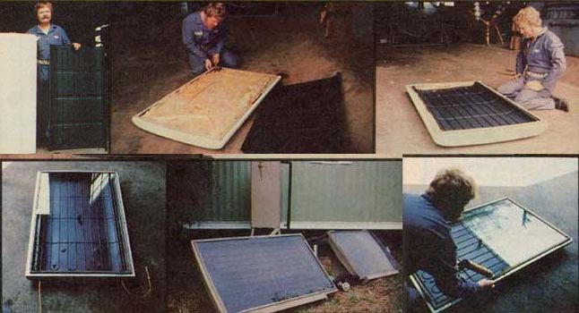

More Ways To Recycle Old Refrigerators Into Low Cost Solar Water Heaters
January/February 1978
When Miles K. Free III sent us an article telling how he'd recycled an old refrigerator into part of a solar water heating system (see "Recycle a Refrigerator Into a Solar Water Heater", pages 108-109, MOTHER NO. 48) ... he didn't know that MOTHER's researchers had already been working on the same idea for some time.
Whereas Miles began his project by thinking about how easy it'd be to convert a refrigerator into an insulated storage cabinet for a tank of solar-heated water, however, MOTHER's research staff sorta approached their conversion project "the other end to".
It all began with an old junked Hotpoint refrigerator that a couple of MOTHER's people were taking apart with the idea of using its compressor as a small solar-powered steam engine or something of that nature. Almost immediately, though, the experimenters were speculating about the heat exchange coils on the back of the reefer's cabinet.
"Hey, that looks an awful lot like the serpentine tubing which goes inside a flat-plate solar collector."
"Yeah, except that the diameter of this stuff-it looks like it's about a quarter inch-is so much smaller than the diameter of the tubing-about a half inch-generally used in a collector."
"Yeah ... but I betcha this exchanger will work in a flat-plate. It may not work as efficiently as a heat exchanger custom-made of bigger tubing, but I think it'll still work. And if it does ... heck, the price is surely right."
So our intrepid adventurers forgot all about their steam engine project and began looking for an insulated collector box to mount their prefabbed heat exchanger in. Just then their eyes fell on the old Hotpoint's front door.
"Hot dog. Look at this. All we've got to do is take the plastic liner out of this door and the exchanger will fit right in. We've already got two-thirds of our whole flatplate collector built for us ... and we haven't even picked up a hammer yet."
What the boys were crowing about was the fact that whoever had originally designed that trusty old Hotpoint ... couldn't have done a better job of making the fridge easy to recycle into a flatplate solar collector. On the one hand, the reefer's heat exchanger-a nearly flat sheet of steel with a serpentine length of tubing already welded to it looked (except for the fact that its tubing was small) just one heck of a lot like the heat exchangers in some very expensive solar collectors. And on the other, the fridge's door-which was really a shallow steel box that was already well insulated-made as nearly an Ideal flat-plate collector box as if it had actually been planned for that end use.
So the boys pulled the liner out of the Hotpoint's door and replaced it with the heat exchanger. Then a couple of holes were drilled through one end of the door and a couple of pieces of scrap copper tubing (also scavenged from the refrigerator) were used to extend the exchanger's coils through the insulated wall. (It was exceptionally easy to slip the recycled 3/8-inch tubing right over the ends of the 1/4-inch plumbing and solder the "splice" into a watertight junction.)
Next, six holes were drilled through both the exchanger plate and the "back" of the collector box (actually, through the main body of the old refrigerator door) and the two were fastened together with stove bolts. Some odd pieces of cardboard were then used to cover the insulation that was still exposed around the "rim" of the exchanger (this was done purely for appearances), and the heat exchanger and its surrounding paperboard trim were all painted flat black.
Finally, two pieces of glass were cut to fit as a "top" for the collector box. The panes were mounted just under the old door's rubber gasket (how's that for having just what you want just where you want it?) and seated in place on a bead of silicone caulking.
MOTHER's crew of merry experimenters then hooked their new collector to a small pump and circulated a strong detergent solution through the flatplate's plumbing to flush out any residue Freon. After that, they connected the collector/pump to a barrel of water, aimed the solar panel at the sun, and turned the pump on. Sure enough! The circulating water immediately began picking up Btu's as it passed through the collector ... and a thermometer soon showed that those calories of heat were, indeed, being transferred to and stored in the drum of water.
AN IMPORTANT POINT: Please note that-due to the small cross section and serpentine pattern of the tubing in the old Hotpoint's heat exchanger-this flatplate collector was not suitable for use in a "passive" thermosiphoning water heating system. (See the interview with David Wright in MOTHER NO. 47 for an explanation of a passive solar heating system's operation.) However, merely by hooking a small pump to the flatplate and pumping water through the collector (and a great many "real-solar panels are set up to work exactly this way), MOTHER's scavenged-from-a-refrigerator-in-a-couple-of-hours collector was made to work just fine.
ANOTHER INNOVATION
So far, so good. But our researchers hadn't even gotten started. As long as they already had the makings of an exceptionally low-cost active solar water heating system on their hands, they figured they might as well go ahead and do the job up right. With antifreeze (so sub-zero temperatures wouldn't bust their solar panel or the plumbing attached to it) circulating from the recycled collector to an insulated exchanger tank ... and a separate set of waterlines (cold in and hot out) leading from that exchanger tank to somebody's home.
The only real problem with that idea, of course, is that exchanger tanks are expensive ($170 and up) and hard to locate. Which is why MOTHER's deucedly clever inventors didn't even bother trying to find a ready-made exchanger tank to buy.
Instead, they went down to the warehouse/workshop of the local natural gas utility (United Cities Gas) and asked for one of the "worn-out" gas-fired water heaters that such companies frequently sell as scrap. And the folks at UCG were nice enough to lay such a tank on MOTHER's men for free.
Now one of the nice things about the "worn-out" water heater tanks which the various gas companies around this continent discard ... is the fact that a good many of those tanks aren't really worn out at all. They're merely defective. The containers leak water all right, but not necessarily because they've rusted through. And if you remove the sheet metal "wrapper" and fiberglass insulation from the basic tank itself ... you'll very often find that the container is only leaking from one small pinhole on a single seam which was never welded quite right when the container was put together in the first place. Such a hole is very easy to "patch" with just a tiny spot weld.
Another very nice thing about these discarded gas-fired water heater tanks is the exhaust stack that extends right through each one of the drums, from its bottom all the way up to its top. This stack was originally designed to transfer heat from a gas flame (burning inside the stack) to the water in the surrounding tank. It's very obvious, then, that if you plumb one of these heater tanks up and run solar-heated hot antifreeze through its stack ... you'll stand a very good chance of transferring large quantities of heat from the central pipeful of circulating antifreeze to the water surrounding it.
Which is just what our boys had in mind. And which is just what they did. The conversion was made by welding one two-inch pipe coupling into the top of the water heater tank's exhaust stack and another into the stack's bottom. A two-inch- to- three- quarter- inch reducing bushing was then screwed into each of the couplings and standard 3/4" copper tubing and fittings attached to the bushings. Presto! A $170 exchanger tank was ours for slightly over $5.00 In hardware and a couple of hours of our time.
At this point we could have put the original meager insulation and sheet metal wrapper back on the exchanger tank ... but we wanted something much better. So we built a plywood box big enough to give the tank a good six inches of clearance all around when set down inside the wooden box ... and completely filled the space surrounding the drum with MOTHER's good ole homemade cellulose insulation (see "How to Make and Install Your Own Insulation", pages 120-121, MOTHER NO. 48).
The super-insulated exchanger tank was then carted over to the home of Butch and Larry Goodwin (two of MOTHER's helpers) and plumbed up with copper tubing to the Hotpoint refrigerator door collector, a second collector built from a Coldspot refrigerator door and heat exchanger, a Grundfos pump, a Hawthorne controller, and the waterlines for the Goodwin's house.
And what happens now is the controller constantly monitors the tempera. ture of the antifreeze in the collectors and the water in the exchanger tank. And whenever the first is at least 3°F warmer than the second, it turns on the pump and circulates the hotter antifreeze from the collectors through the exchanger tank's central stack (where the hot fluid gives up some of its heat to the surrounding water) and back again. The controller also runs the pump at a slower speed when the collectors are only slightly warmer than the storage tank ... but at high speed when the sun is really blazing and there's a great deal of trapped heat in the collectors to transfer to the exchanger drum.
An ordinary paint can with a plumbing connector soldered to its bottom serves as both an expansion tank and a filter spout on the "closed loop" of circulating antifreeze. The system is filled with a 50/50 solution of water and propylene glycol ... and propylene glycol (which is used to winterize the plumbing fixtures in motor homes and camping trailers) was chosen because it's non-toxic and will not contaminate the Goodwin's household water supply if the stack inside the system's exchanger tank ever develops a leak.
The total cost of this solar water heating system (which now heats most of the water used by a family of four) was $173.04 ... and we'll put the rig up against manufactured units costing anywhere from $500 to $1,500.
ANOTHER DESIGN
Nobody could have called us quitters if we'd stopped this particular set of experiments right there. But once we'd gotten that far with an active solar water heater scrounged up largely from recycled refrigerators and other salvaged parts ... well, we'd begun asking ourselves why we couldn't cobble together a passive system from mostly the same kind of materials.
So MOTHER's Little Elves selected a relatively tall General Electric fridge from her large stock of old freezers and refrigerators (see sidebar) and removed its compressor, heat exchanger coils, motor, and other hardware. Then they stripped out all the unit's shelves and racks ... even its lining and insulation (the insulation was carefully set aside for later use). The lining-but not the insulation-was also taken out of the reefer's door.
The resulting empty case was then turned on its side and a salvaged, stripped-down, 40-gallon, electric water heater tank was mounted inside the box on wooden supports. (In addition to being stripped, the tank was further modified by the addition of a fitting welded into its original base and the plugging of an "extra" opening on its other end.)
Next an "absorber plate"-much like the scavenged heat exchanger panels used in the refrigerator door flat-plate collectors already described in this article ... except with parallel runs of 1/2-inch copper tubing instead of a serpentine run of 1/4-inch tubing for the circulating fluid to flow through-was put together.
The absorber consists of six parallel lengths of 1/2-inch hard copper pipe spaced 3-3/4" apart and connected across their ends with standard plumbing T's and elbows (see illustration). This manifold was then soldered onto the flattened and trimmed (so it would just fit inside the refrigerator door in place of the removed lining) sheet of steel that had once been wrapped around the insulation on the salvaged water heater tank. Note, 'too, that the manifold was mounted on the sheet of metal with one end slightly higher than the other. This was done on purpose so that any bubbles which might ever form in the tubes willinstead of forming an "air lock"-automatically rise up and flow out of the manifold into the water storage tank above.
The absorber plate-manifold and all-was then painted flat black and mounted inside the insulated refrigerator door. The manifold was connected to the storage tank with two flexible hoses and a double strip of Masonite was added to the door to [1] hold the hoses in place and [2] form one edge of the mounting for the glazing that was installed next. Just as in the refrigerator door flat-plates already described, this glazing consisted of two pieces of glass cut to fit, mounted under the door's rubber gasket on three sides (and on the double strip of Masonite on the other) and scaled in place with silicone caulking.
The whole unit was next mounted on the sunny south wall of MOTHER's research shop and its storage tank was plumbed up with two connections: a cold "in" line from the city water main and a hot "out" line running into the workshop. After all the connections were checked for leaks, mucho insulation (both the fiberglass batting that had originally been removed from the case and as much "extra" homemade cellulose as could be packed in) was stuffed around the storage tank, and the refrigerator case was closed off with a panel of waterproof Masonite.
You'll notice that this sheet of Masonite has aluminum foil glued to its front (to reflect a little more solar fall down onto the collector panel). If you look closely at the opened solar water heating system, you'll also see that the two hoses running from the collector panel to the insulated storage tank pass through elongated slots in the sheet of Masonite fastened over that tank. These slots allow the hoses to " fold up" inside the insulated cavity, thereby making it possible for the flat-plate collector door to be swung up and closed at night and on overcast days. This [1] protects the unit from freezing up during subzero weather, [2] protects the critical parts of the system from vandals at night, and [3] makes it possible to heat a tank of water with solar radiation on a bright, sunny day ... and then save and use that hot water as desired throughout as much as a following week of overcast, cold weather.
Pretty clever, these experimenters of ours! And this whole passive solar water heating and storage system -which supplies 100% of a threeto four-man shop's hot water needs-only cost us $41.97 out-of-pocket. Show us a commercially manufactured unit with anywhere near the same performance for anything less than $1,000 ... and we'll give you a free blistering-hot hand wash on any winter's day of your choice.
A SMALL DISCOVERY
While working on this recycled refrigerator project, MOTHER's researchers stumbled onto an idea that could well be developed into a profitable home business by hundreds of readers scattered across the country.
What happened was-in an effort to assemble a large collection of old refrigerators, freezers, and water tanks to experiment with-we ran a small classified ad in the local very small daily newspaper. The ad read: "Will haul away discarded refrigerators and hot water tanks" . . . and the response was overwhelming.
Within two days ( well within two da s) we were qualifying our telephone calls (is ("What kind of refrigerator'? What shape is it in?"). In short, if our experiences are any indication, a lot of people at any given time in any given community across the United States and Canada are anxious to have someone haul away old refrigerators, freezers, and water heaters.
We found that quite interesting. But the really amazing part of the whole deal was the fact that six out of the first eleven refrigerators we picked up were still in working order . . . or began running as soon as we replaced the appliance's temperature control switch . Or, to put it another way: With just a little tinkering, over half of all the fridges we picked up could have been sold at a handsome profit as "good used refrigerators in operating condition".
Aha! Suddenly it became apparent to us why so many small towns across the country always seem able to support at least one "used furniture dealer" who specializes in old kitchen ranges and refrigerators ... and who always seems to do as well or better than the "real" merchants downtown. This guy may look as if he's dealin in junk ... but he's really handling solid gold!
Very quickly, then: [1] A very small and very inexpensive classified ad can very quickly put more used refrigerators, freezers water heaters, etc., at your fingertips than you'll know what to do with. [2] A number of people will even offer to pay you to haul the units away. [3] Over half of those appliances-if our experience is any indication-still work beautifully or can be put back in running order with hardly any output of labor or cash. [4] There's always a market for good used major appliances. [5] The real clunkers will still cover your overhead when carted to a junk dealer and sold as scrap. [6] Or, better yet, convert those clunkers into solar water heaters and sell 'em that way! Any way you look at it, there's a good solid net $10,000- or $15,000-a-year business here on hardly any initial investment at all.
ONE FURTHER POINT: Experiments have shown us that other brands of refrigerators and freezers seldom convert into solar collectors as easily as our original Hotpoint. But that's not as bad as it sounds. In most cases, it takes only a small amount of trimming and reshaping to make things fit together the way you want them. And, at worst, an insulated wooden box can be fabricated around really odd-sized and-shaped exchanger coils to make a flat-plate collector ... but there's so many "good" old refrigerators around that it's just easier to look a little further and find one that's already "custom designed" for conversion into a solar panel.
|
 Below: Dennis Burkholder displays the Hotpoint door and heat excharger which fit together so well to form a flat-plat solar collector panel... the door with its interior lining ? but not its insulation ? removed and the exchanger ready to go into place . . . and the two put together. SECOND ROW: The first of two panes of glass has been cut to fit under the rubber gasket around the edge of the refrigerator door and is now seated in a bead of silicone as Dennis prepares to mount the second sheet of glass ... the nearly completed collector clear show copper tubing has been run through an end wall of the refrigerator door to connect the solar panel to a storage tank and other parts off active water heating system ... the completed installation. |
 Drawing shows details of pesisive solar water heating system recently developed by MOTHER . |
Drawing gives more details of the active system. |
|
FIRST ROW . Demonstration of how gas water heater was taken apart so the tank inside could be used in our active water heating system ... the gas water heater tank was converted by welding a two-inch pipe coupling into both the top and the bottom of its central stack and screwing two-inch-to-three-quarter-inch reducing bushings into the couplings ... the passive water heating and storage system during assembly. SECOND ROW : The finished passive water heating and storage system an it looks mounted on MOTHER's research shop wall with its collector in the open position ... the system closed and locked for the night...Dennis demonstrates the system's operation for a Japanese television camera crew. |
|
|